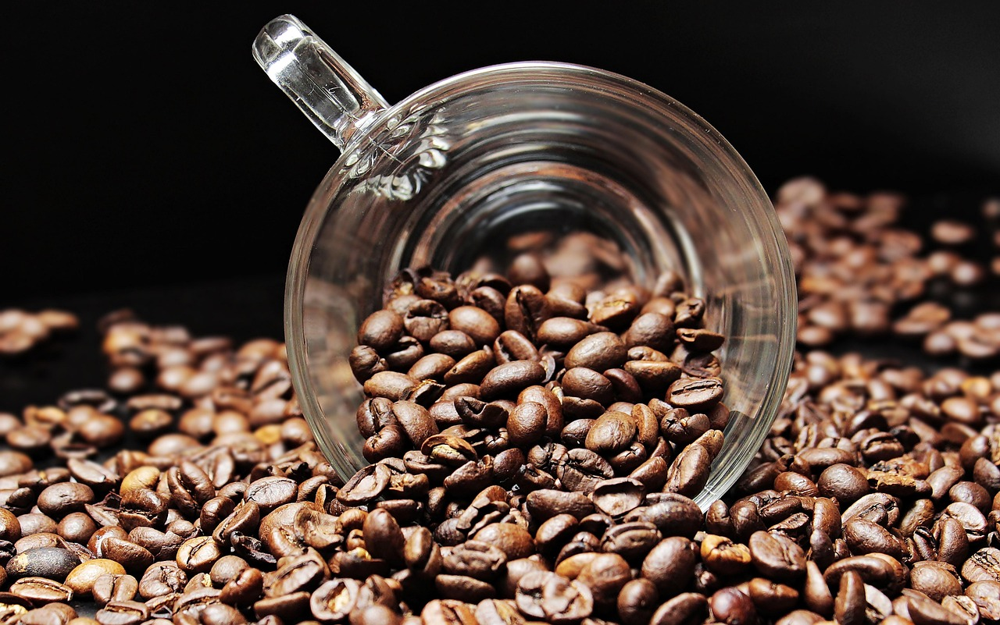
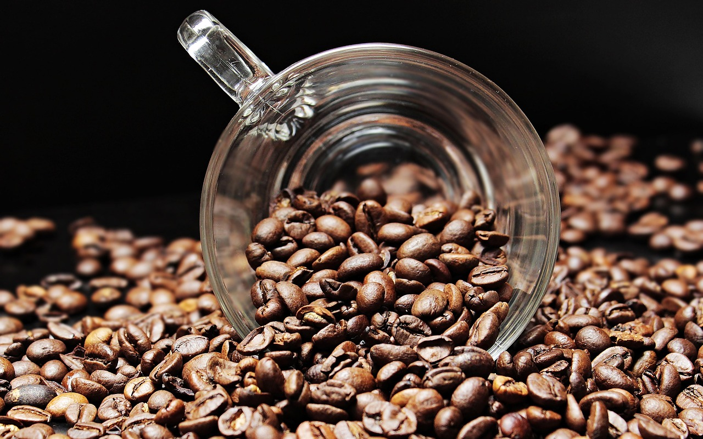

OUR PROCESS
Our core philosophy is to perfect every step in the life of the coffee bean, from seed to cup. We understand that the most important part of the coffee process is care. This sense of care extends not only to the taste of the perfect cup of coffee but also to the entire ecosystem that goes behind making it.
SELECTING BEANS
The coffee bean is a complex character, a cultural phenomenon, a fascinating find. We spend a considerable amount of time (read: most of it) interacting closely with farmers to understand the coffee they produce. To us, it’s vital to source your coffee directly from farms, taking care to ensure that they are sustainably grown and ethically traded.
ROASTING
Our carefully picked selections are roasted in a state-of-the-art in-house coffee roaster. We roast the beans in small batches with specific profiles to create optimal flavour notes and potent aromatics.
GRINDING
Our coffee is freshly ground, ensuring the retention of all of its delicious flavours. The grind size is customised according to the equipment you need.